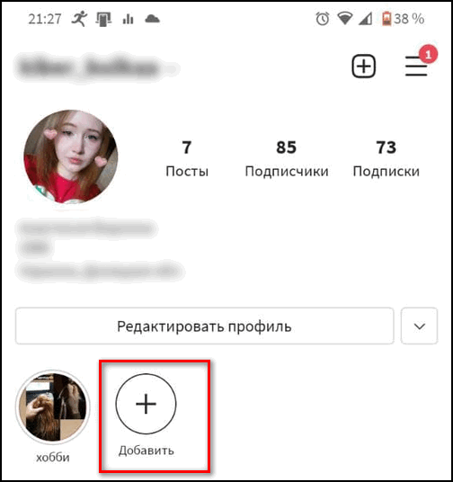
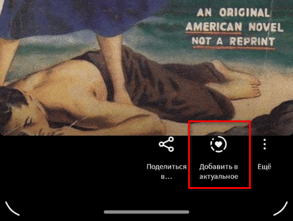
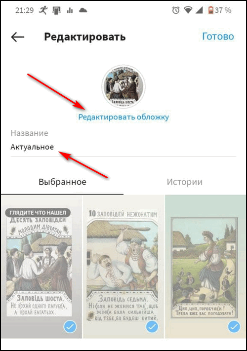
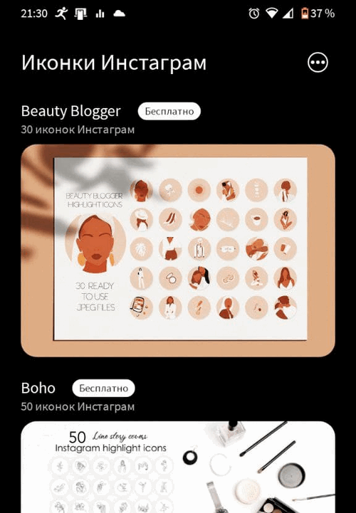
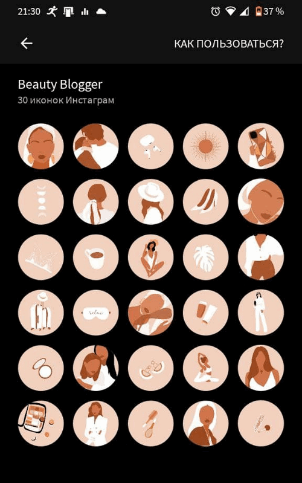
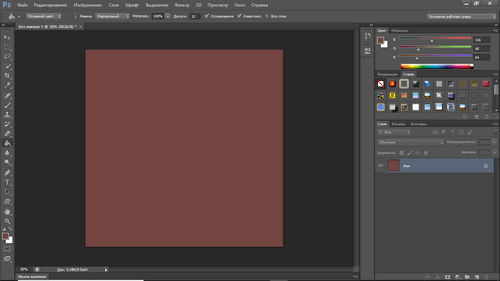
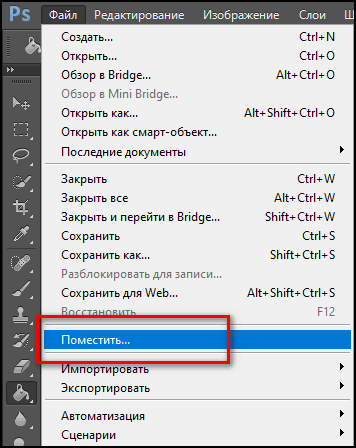
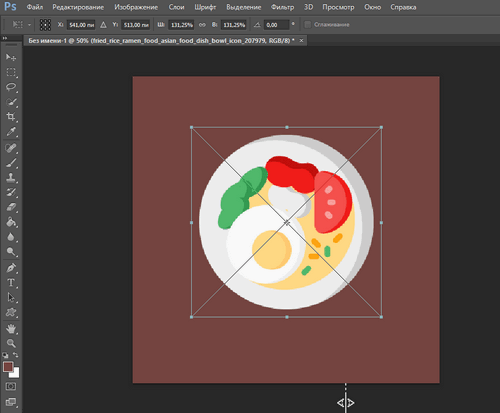
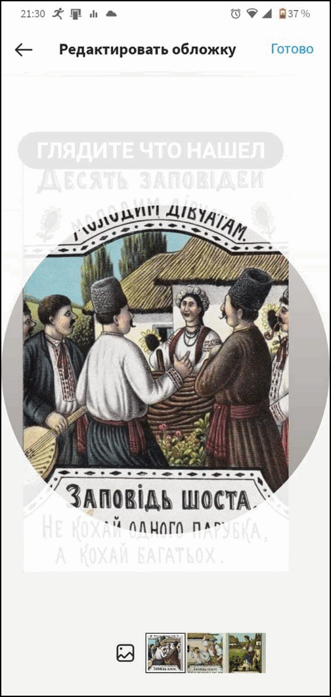

Актуальное в Инстаграме: как создать и заполнить

- Актуальное в Инстаграме*: где найти
- Как добавлять Истории
- Как сделать обложки для Актуального в Инстаграме*
- Через мобильные приложения
- Компьютерные программы
- Настройки и редактирование Актуального
- Скрыть или сделать только для друзей
- Поменять местами
- Требования к Актуальному: для блогеров и магазинов
- Как смотреть статистику по вечным Сторис
Сделать Актуальное в Инстаграме* возможно из Историй, ранее опубликованных пользователем. Владельцу страницы нужно выбрать посты, которые подходят по одинаковой теме и идее.
Актуальное в Инстаграме*: где найти
Актуальное – это раздел, который расположен под описанием страницы. Выглядит, как кружочки со значком «+» посередине. Вкладка есть на всех типах профилей: автор, бизнес и личный (скрытый или общедоступный).
Преимущество Актуального в том, что там закрепляют важную информацию, которую впоследствии можно обновлять. Присутствуют элементы оформления: обложка, название, выбор списка публикаций. Где искать Актуальное:
- Зайти в Инстаграм* – авторизоваться.
- Нажать: «Мой профиль» - выбрать под описанием: «Актуальное».

- Нажать «+» - записать первую Историю и загрузить.
Создавая закрепленные публикации у пользователя появится пустое поле: «Добавьте название». После того, как будет окончательно создана – можно отредактировать обложку, указать порядок для нескольких закрепленных папок.
Как добавлять Истории
В последних версиях, добавить Историю в Актуальное в Инстаграме* возможно через кнопку «+» в верхней части экрана. В новый раздел перенесли все способы создания контента, включая загрузку Истории. Как добавить Stories и загрузить в закрепленные:
- Зайти в Инстаграм* – авторизоваться.
- Мой профиль – сверху нажать по значку «+».

- Выбрать вариант: «Опубликовать Историю» - создать публикацию.
- Поделиться – Добавить в Актуальное.
- Придумать новое название и опубликовать.
Теперь под описанием появится значок закрепленных постов и его наименование. Если аккаунт общедоступный, то посмотреть Актуальное сможет любой посетитель страницы. В закрытой, соответственно, только подписчики профиля.
Как сделать обложки для Актуального в Инстаграме*
Чтобы создать обложку, можно воспользоваться одной из понравившихся фотографий, скачать шаблон или же создать с помощью мобильного приложения, компьютерной программы. Через Photoshop пользователь сможет самостоятельно подобрать размеры, выбрать фон и иконку. Воспользовавшись мобильными приложениями, нужно выбирать из списка доступных графических объектов. Чтобы создать обложку из уже размещенных видео:
- Зайти в Инстаграм* – нажать по ранее добавленному «Актуальному».
- Зажать пальцем – появится вариант: «Редактировать».

- Изменить обложку – выбрать из последних фотографий.
Чтобы добавить стороннюю картинку, пользователю нужно дать разрешение на подключение к Галерее и выбрать снимок оттуда. При добавлении одной из фотографий на обложку Актуального, нужно выбрать область, которая будет отображена для подписчиков. Можно увеличивать картинку, перемещать рамку.
Через мобильные приложения
С помощью утилиты «Обложки для Сторис», пользователь сможет создать уникальную картинку, которая подойдет для оформления его профиля. Можно создать изображение, которое будет соответствовать описанию, общему стилю ведения профиля. Как воспользоваться приложением и украсить свой аккаунт:
- Перейти в Play Market и скачать приложение для обложек.
- Установить – открыть.

- Отказаться от платной подписки – выбрать из предложенного каталога шаблоны.
- Сохранить на устройство.

Далее, нужно перейти в Инстаграм* и нажать по недавно добавленным закрепленным Историям. И выбрать вариант: «Загрузить с помощью Галереи». Из ранее сохраненных картинок нужно подобрать те, которые были загружены из приложения.
Компьютерные программы
С помощью Photoshop пользователь сможет самостоятельно создать обложку, подобрав фон и графический элемент. Но при создании таким способом, нужно учитывать разрешение – 1080 на 1080 пикселей. Как сделать:
- Зайти в Photoshop – нажать сверху: «Создать».
- Указать размер холста и цвет фона.

- Найти в поисковике любой графический элемент в качестве основного.
- Выбрать в программе: «Создать» - Поместить.

- Переместить картинку, отрегулировать положение и добавить.

- Сохранить как – формат «png».
После этого, нужно передать файл на мобильное устройство и перейти к редактированию закрепленных публикаций. Потому что с компьютерной версии такой вариант отсутствует: только через приложение.
Настройки и редактирование Актуального
Отредактировать после добавления можно любое «Закрепленное». Основные настройки «Актуального» включают:
- изменение названия;
- редактирование списка добавленных публикаций;
- загрузка обложки;
- параметры конфиденциальности.
Причем, последний нужно указывать еще при загрузке Историй на страницу. Чтобы отредактировать добавленное «Актуальное»:
- Зайти в Инстаграм* – под описанием выбрать одно из Закрепленных.
- Зажать пальцем – Редактировать.

- Появится страница с пустым полем для ввода и загрузкой обложки.
Максимальное количество символов для добавления в названия – 16, включая пробелы. Вместо текста можно применить смайлики или вовсе установить пустой символ. В такой ситуации, будет отображено пустое название и обложка.
Чтобы отредактировать перечень загруженных Историй, нужно в разделе: «Редактировать» убрать галочки с тех публикаций, которые не подходят.
Скрыть или сделать только для друзей
Оформляя Актуальное в Инстаграме*, можно сделать одну подборку только для друзей. Но для этого, предварительно загружают публикации с пометкой: «Для близких».
- Зайти в Инстаграм* – выбрать: «Добавить Историю».
- Сделать снимок или загрузить из Галереи.
- Далее – Опубликовать.
- Только для близких друзей – подтвердить.
- Выбрать значок «+» под описание – Создать новое Актуальное.
- Добавить название и обложку – из списка рекомендованных постов указать те, которые были размещены для друзей.
Посетители страницы, которые не входят в список, увидят только обложку и название. Но не смогут перейти к публикациям.
Поменять местами
Изменить расположение Историй в Актуальном не получится. Каждая публикация оценивается по дате добавления и их порядок возможен только по этому параметру. Последний вариант, который остается у владельца страницы – удалить ранее добавленную Историю и опубликовать заново.
- Зайти в недавно добавленные «Закрепленные публикации».
- Редактировать – убрать галочку напротив ненужного поста.
- Зажать пальцем по закрепленному.
- Выбрать: «Удалить актуальное» - подтвердить.
Требования к Актуальному: для блогеров и магазинов
Для владельцев блогов и интернет-магазинов, Актуальное должно содержать полезную информацию. Переходя на такую страницу, клиент должен видеть примеры работ, прайс, услуги и их варианты. Как правильно оформить для интернет-магазина:
- с ценами. Создать небольшое изображение, где автор расскажет о ценах;
- примеры работ/услуг. Варианты, которые может заказать клиент;
- текущие акции, распродажи и конкурсы;
- сертификаты качества и этапы производства;
- знакомство с представителями, создателями;
- отзывы от покупателей.
Клиент должен получить ответы на все свои вопросы, которые касаются доставки, цены и способов оформления. Помимо основных условий, нужно добавлять развлекательный и информационный контент. Например, как можно применять продукт или какие у него есть особенности. Для экспертов и тех, кто занимается продажей инфопродуктов – подготовить записи с рассказом об успехах выпускников.
Как смотреть статистику по вечным Сторис
В разделе: «Актуальное» блок Статистика недоступен, как только прошло 24 часа после размещения публикации. Их нельзя отследить и только просматривать информацию через вкладку: «Архив». Как посмотреть аналитику по отдельным Сторис:
- Зайти в Инстаграм* – Настройки.
- Архив – Истории.
- Выбрать дату – на публикации будет указано количество просмотров.
Статистика работает только на страницах «Авторов» и в «Бизнес» аккаунтах. Для личных или скрытых такой функционал недоступен.